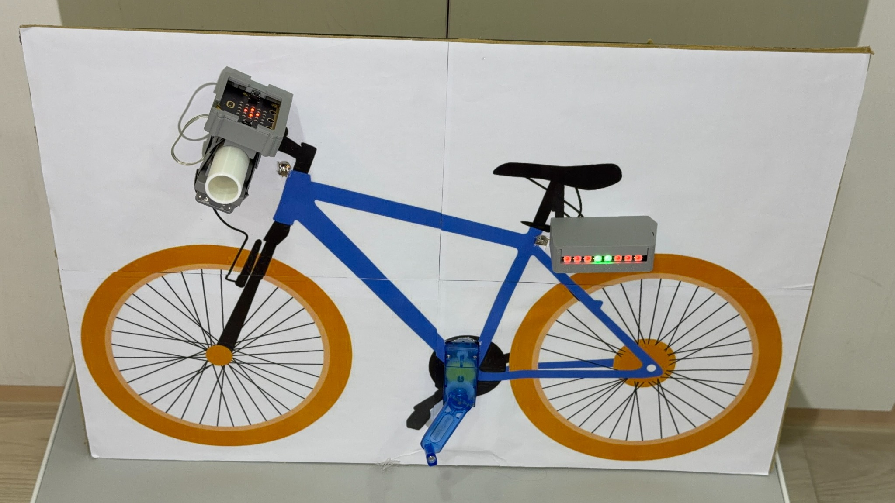
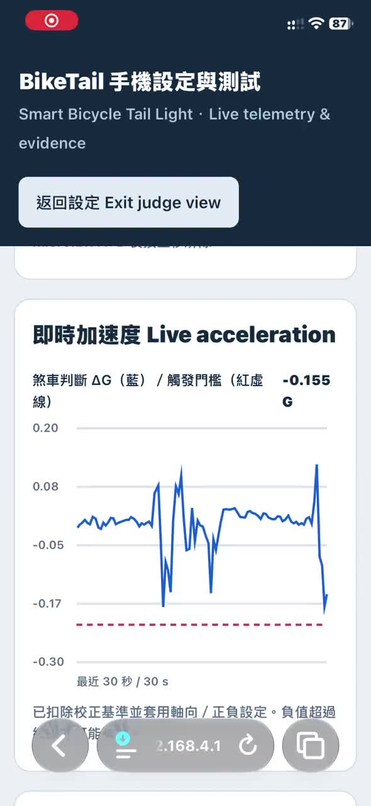
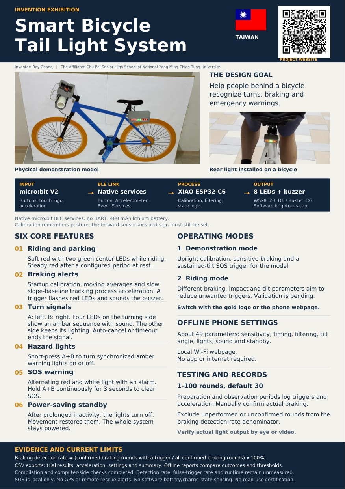

Riders need to be understood
A rear light can show more than a bicycle’s presence. People behind also need cues about what the rider is doing.
讓後方更容易辨識轉彎、煞車與緊急狀況。
A working prototype · Invention showcase
A wireless bicycle light that combines turn signals, braking alerts and a local SOS warning in one prototype.
智慧自行車尾燈系統：整合方向燈、煞車與現場 SOS 聲光警示。
Working prototype with model and outdoor demonstrations. Detection rates and battery runtime remain open.

PROJECT AT A GLANCE · 作品重點
Designed to help a cyclist communicate turns, braking and emergencies through light and sound.
A rear light can show more than a bicycle’s presence. People behind also need cues about what the rider is doing.
讓後方更容易辨識轉彎、煞車與緊急狀況。
A handlebar micro:bit sends button and motion data over Bluetooth to an ESP32-C6 rear light.
車頭控制器透過藍牙傳送操作與感測資訊。
Eight programmable LEDs and a buzzer provide turn signals, braking alerts, hazard lights and a local SOS warning.
以 8 顆 LED 與蜂鳴器呈現不同聲光訊號。
Current stage · Physical prototype and bicycle footage available. Detection rates and battery runtime remain to be measured.
01 / The problem
A person behind a bicycle may need to recognize a turn, a sudden stop or a rider who needs attention. This project explores how a rear light can communicate those different situations through distinct light patterns and sound.
The prototype combines a handlebar controller, motion sensing and a rear light. Its physical display model makes the sequence easy to inspect: an action creates sensor or button data, the program evaluates that input, and the rear unit produces a response.
Real bicycle footage shows the installation in an outdoor setting. It provides useful demonstration material, while controlled measurements are still needed to assess detection accuracy and false triggers.
實體模型能展示「操作、感測、判斷、尾燈反應」。實車影片呈現安裝與展示情境，還不能當成正式成功率證明。
02 / How it works
The front unit gathers inputs. BLE carries the information. The rear unit makes the lighting and sound decisions.
A/B buttons, the gold touch logo and the built-in accelerometer.
Native Button, Accelerometer and Event Services. No UART service.
Calibration, signal processing, operating-mode parameters and state logic.
Eight WS2812B LEDs and a buzzer provide the local warning.
BLE connects the front and rear units. The separate local Wi-Fi webpage is for phone settings and experiment management.
Read the architecture in detail ↗車頭與尾燈使用 BLE 通訊；手機設定使用 ESP32-C6 的本地 Wi-Fi，兩者用途不同。
03 / Functions
Manual signals and automatic sensing share the same light. Brightness is limited in software.
While riding, soft steady red light surrounds two green center LEDs. After a configured period without movement, the light changes to steady red for parking.
巡航為柔和紅燈加中央兩顆綠燈；靜止一段設定時間後切換為全紅。
The program evaluates acceleration changes. A braking trigger starts red flashes and the buzzer. Start-up calibration, moving averages and slow slope-baseline tracking aim to reduce vibration and mounting-angle effects.
以加速度變化判斷煞車，搭配開機校正、移動平均及坡度基準追蹤，實際效果仍待驗證。
Press A for left or B for right. The four LEDs on that side show an amber sequence with sound. The other side keeps its normal lighting. Turn-return detection and a timeout can cancel the signal.
A 左轉、B 右轉，同側四顆燈黃光流水，另一側維持照明；具轉彎後取消與超時關閉功能。
A short A+B press toggles synchronized amber warning lights on both sides.
短按 A+B，開啟或解除雙黃警示。
Alternating red and white flashes combine with an alarm. Clearing SOS requires a continuous three-second A+B hold. This warning attracts nearby attention and does not send a remote rescue message.
紅白交替閃光及警報音，需連續長按 A+B 三秒解除。SOS 只在現場警示，不會自動報警。
After prolonged inactivity, the LEDs turn off. Detected movement restores the lights. This is a lights-off standby state, rather than a complete power shutdown of both units.
長時間未移動時關燈，偵測移動後恢復；不是整套系統完全斷電。
04 / Watch the prototype
Choose a recording from the list. Watch the real bicycle footage, or explore the model walkthrough and edited introduction.
A complete hands-on demonstration with English narration and English subtitles, with the model’s original recorded beeps and alarm sounds. See riding and parking lights, turn signals, hazard lights, braking alerts and the local SOS warning.
Download English subtitles (SRT) ↓Recording labels describe the visible scenes. Performance scores require a controlled test with confirmed actions, trigger records and observation of the real light output.
Open a photograph for a closer look.
照片呈現實體模型與實車安裝，影片記錄實際展示情境。
05 / Operating modes
Touch the micro:bit’s gold logo or use the phone webpage to switch modes.
Start with the model upright and still for calibration. Braking detection is more sensitive so that short movements can demonstrate the response. A tilt beyond the configured angle, maintained for the required duration, can trigger SOS.
適合模型短距離展示。先扶正校正，再用超過設定角度且持續足夠時間的傾倒觸發 SOS。
A different set of braking, impact and tilt parameters aims to reduce unwanted triggers in everyday movements. This intended improvement still needs physical validation and does not establish road-use certification.
使用不同的煞車、撞擊與傾倒參數，以降低日常誤觸為目標；效果待測，沒有道路使用認證。
It records the starting posture. It cannot automatically identify the bicycle’s forward direction, so the correct sensor axis and positive/negative direction must still be configured.
06 / Phone settings
~49adjustable parameters
約 49 項設定，可透過手機離線網頁調整。
The ESP32-C6 provides a local Wi-Fi webpage. A phone can connect to that network and open the interface without an app installation or an internet connection.
Parameter families include sensitivity, confirmation time, filtering, tilt angle, lighting, sound and standby duration. The page also switches operating modes and supports the braking-test schedule.
These are parameter families, rather than a verified item-by-item list of all settings. The exact current values must be preserved with each test run.

See the recorded phone interface ↗A real acceleration trace with its configured threshold.Understand the connection and settings ↗07 / Testing & evidence
The experiment workflow makes decisions inspectable. See what the prototype recorded and which measurements are still open.
Set 1–100 rounds, with 30 as the default. Each round includes preparation and observation periods.
Save acceleration samples, whether the logic triggered and the settings used for that run.
Manually identify rounds in which braking really occurred. Exclude unperformed or unconfirmed rounds.
Check real light output by eye or video. A program trigger record alone cannot prove the LEDs responded.
For the braking detection metric, divide triggered, manually confirmed braking rounds by all manually confirmed braking rounds, then multiply by 100%.
A round with no actual braking action does not belong in this denominator. Separate trials involving movement without braking are needed to evaluate unwanted triggers. If no braking rounds have been confirmed, the rate is unavailable.
煞車成功率分母只包括人工確認確實煞車的輪次；未做、未確認者排除。沒有有效輪次時，不能計算成功率。
The available riding-mode log contains 10 completed observation rounds. All 10 are unconfirmed, leaving zero confirmed braking rounds. A braking detection rate cannot be calculated from this log.
現有騎乘模式紀錄完成 10 個觀察回合，10 回合皆未經人工確認，無法計算煞車偵測率。
Braking detection rateTo be measured
False-trigger performanceTo be measured
Battery runtimeTo be measured
Trial results
Inspect outcomes round by round.
Acceleration data
Examine the recorded motion signal.
Run settings
Keep the configuration used in the test.
Rate summary
Review the confirmed-trial calculation.
The offline report tool can create trial-outcome plots, acceleration-versus-threshold views, before/after comparisons and data-quality prompts. Its export options include PNG, SVG, PDF and HTML containing data.
Read the full testing protocol ↗08 / Development status
模型與外殼已完成，仍需實體及戶外測試來驗證效果。
The physical display model and printed housings have been built. Compilation and computer-side tests have been performed. Photographs and demonstration footage document the hardware and its presentation.
Braking detection performance, unwanted triggers, outdoor visibility and battery runtime require physical measurements. Comparisons before and after parameter changes should use consistent actions and conditions.
No GPS location, automatic emergency call, SMS or remote rescue notification. No software battery-level or fully-charged-state detection. The project cannot guarantee detection of every fall, eliminate all false triggers or guarantee accident prevention.
Riding mode is a parameter set, not a road-use certification. The current contribution is a working integration and a testable development process.
Read the limitations in full ↗09 / Exhibition resources
The poster and slides summarize the prototype, how it was demonstrated and how it can be evaluated.

A1 exhibition poster PDF ↗Architecture, functions, testing, limitations and judges’ questions.
↓A1 PORTRAIT · 594 × 841 MMPrint-ready posterThe physical model and bicycle installation, with the core project explanation.
↓DETAILED PROJECT DOCUMENTATIONTechnical guide & judges’ Q&AHardware, sensing, operating modes, testing decisions and current limits.
↗ENGLISH SCRIPT · CHINESE REFERENCEOne-minute introductionA short narration to accompany a model demonstration.
↓10 / A few important questions
The project integrates rider controls, motion sensing, light-and-sound feedback, phone tuning and inspectable test records in one prototype. A prior-art review is needed before making a patent-novelty claim.
Runtime has not been measured. The capacity alone cannot establish a four- or five-hour operating time. The test must record brightness, sound activity, wireless use and the standby pattern.
No. It attracts nearby attention through light and sound. It does not provide GPS, automatic calls, SMS or remote rescue notification.
Use a separate set of non-braking actions, keep the test conditions documented, and record unwanted triggers. The braking-only success-rate calculation cannot establish false-trigger performance.